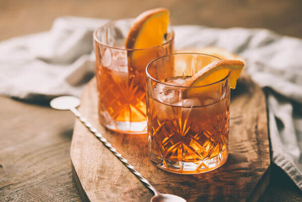

Old-Fashioned

Ingredients:
- 1/2 TS Sugar
- 3 dashes Angustora
- 1 TS Water
- 2 ounces Burbon
- Garnish: Orange Peel
Preparations:
- Add the sugar and bitters to a rocks glass, then add the water, and stir until the sugar is nearly dissolved.
- Fill the glass with large ice cubes, add the bourbon, and gently stir to combine.
- Express the oil of an orange peel over the glass, then drop in.